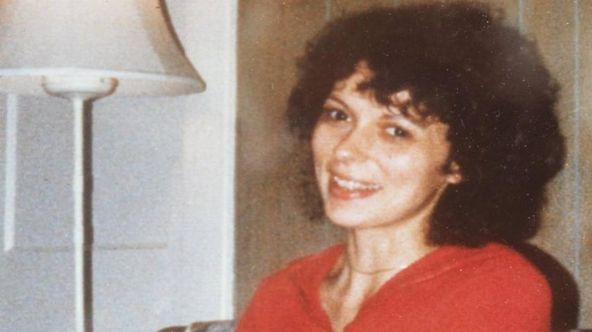
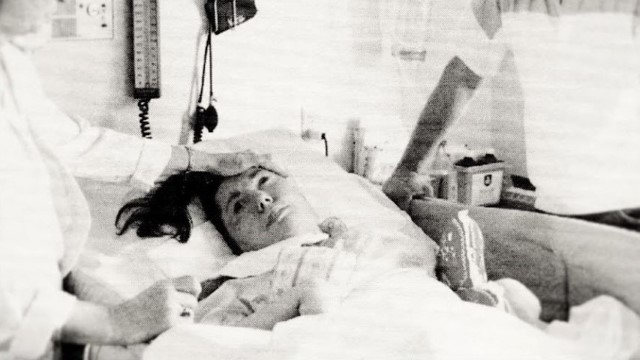

Samuel Lihn, USII Summer Project
Cruzan v. Director, Missouri Department of Health
The Right to Die
Heard: December 6, 1989
Decided: June 25, 1990
Background
Click on any of the underlined cards to read more about the event.
- Nancy Cruzan is severely injured in an automobile accident.
- She is transported to a Missouri State Hospital.
- She lies in a "persistent vegetative state", with no cognitive functions, only motor reflexes.
- Her parents request to end her artificial nutrition and hydration and end her life.
- Hospital employees refuse to do so without court authorization.
- A state trial court authorizes the end to her life support.
-
She had suggested to a former housemate that if she were injured or sick, she would not wish to continue her life unless she could live at least halfway normally.
This was sufficient reason consent to end her life support.
- The Missouri Supreme Court reverses the decision.
-
The court questioned the applicability of the right to refuse treatment because she is in a vegetative state.
They also decided that the State Living Will statute strongly favored preservation of life.
This meant that Cruzan’s suggestions to her housemate were not sufficient consent to die.
The court also stated that Cruzan's parents could not decide for her because they lacked "clear and convincing evidence"
- The Cruzans appeal the reversal, and the United States Supreme Court agrees to hear the case.
Constitutional Questions
14th Amendment
The Due Process clause in the Fourteenth Amendment states that "nor shall any state deprive any person or life, liberty, or property without due process of law". This clause was important in this case because Cruzan was being required by the state to remain on life support, thus depriving her of her liberty without due process of law. Her vegetative state made her unable to express the will to die or live, making the constitutionality of keeping her on life support unclear.
"The question before this Court is a relatively narrow one: whether the Due Process Clause allows Missouri to require a now-incompetent patient in an irreversible persistent vegetative state to remain on life support absent [without] rigorously clear and convincing evidence that avoiding the treatment represents the patient's prior, express choice."
The effect of incompetence
It is assumed that a competent person has the constitutional right to refuse life support. However, this does not mean that an incompetent person also has this right, as they are unable to make conscious or informed decisions to withdraw or keep life support.
The Decision
5-4
In favor of the Missouri Department of Health
The court ruled that it was not unconstitutional for Missouri to require "clear and convincing evidence" that an incompetent person wished to be taken off life support.
An incompetent person is unable to make an "informed and voluntary choice" to exercise the right to refuse treatment
By requiring "clear and convincing evidence", the State of Missouri has established a safeguard to prevent an incompetent person's surrogate from acting against the incompetent's wishes. By doing this, it is acting based on its general interest in the protection and preservation of human life.
Although Nancy Cruzan's parents were qualified to act as surrogates for her, the evidence they provided was not clear enough to override the State's general interest to preserve life
"The United States Constitution does not forbid Missouri to require that evidence of an incompetent's wishes as to the withdrawal of life-sustaining treatment be proved by clear and convincing evidence."
The Due Process Clause does not require a State to accept the "substituted judgment" of close family members in the absence of substantial proof that their views reflect the patient's.
Impact
Effect on individual rights
The decision limited the constitutional rights of both the incompetent and the relatives thereof. It was ruled that an incompetent cannot exercise the right to refuse unwanted medical treatment because an incompetent cannot make a conscious decision to do so.
Additionally, the decision put forward a precedent that no matter how close an individual is to the incompetent, it is not unconstitutional for any decisions they make on behalf of the incompetent to be scrutinized by the state.
Ultimately, this decision limited the hypothetical constitutional rights of incompetent individuals, as well as the right for surrogates that may make decisions on their behalf.
Effect on state rights
This decision ruled that it was not unconstitutional for Missouri to require evidence before a surrogate makes the decision to take an incompetent off life support. It also allowed a state to reject “substituted judgement”, where a close family member or parent makes decision for an incompetent.
The Due Process Clause does not require a State to accept the "substituted judgment" of close family members in the absence of substantial proof that their views reflect the patient's.
Therefore, it set forth a precedence on how states could regulate surrogates making decisions on behalf of the incompetent. This precedent of increased regulation expanded the power of the state.
My Opinion
I agree with the decision.
An incompetent person without cognitive function is unable to make decisions, meaning that the decision to be taken off life support must be made by another person.
Considering that ending one’s life is the largest decision that could be made on behalf of an incompetent individual, I believe that whatever decision is made on behalf of the incompetent should be heavily scrutinized and that states should be allowed to ensure the surrogate is acting in the individual’s best interests.
The best way to infer a now-incompetent individual’s best interest is through evidence from their competent past, so I think it is reasonable for a state to require such evidence.
Bibliography
“Cruzan by Cruzan v. Director, Missouri Department of Health.” Oyez, Oyez, www.oyez.org/cases/1989/88-1503.
Lewin, Tamar. “Nancy Cruzan Dies, Outlived by a Debate over the Right to Die.” The New York Times, The New York Times, 27 Dec. 1990, www.nytimes.com/1990/12/27/us/nancy-cruzan-dies-outlived-by-a-debate-over-the-right-to-die.html.
“Nancy Beth CRUZAN, by Her Parents AND Co-Guardians, Lester L. Cruzan, ET UX., Petitioners v. Director, Missouri Department of Health, Et Al.” Legal Information Institute, Legal Information Institute, www.law.cornell.edu/supremecourt/text/497/261.
Support, Green Tie. “Case Study - the Case of Nancy Cruzan.” The Center for Practical Bioethics and Healthcare Educational Resources, https://practicalbioethics.org/case-studies-study-guide-nancy-cruzan.html.